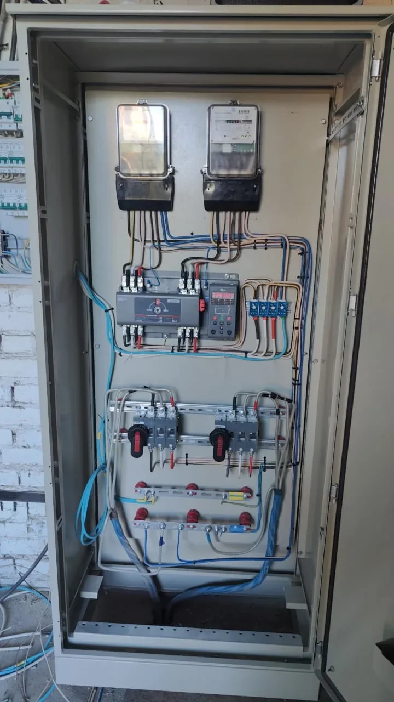

Частный дом / резервное питание
АВР для частного дома: когда нужен автоматический ввод резерва
АВР автоматически переключает дом на резервный источник, когда пропадает основное питание, и возвращает нагрузку обратно после восстановления сети. Но надежная система начинается не с покупки шкафа, а с ответа на три вопроса: что резервируем, от какого источника и на какое время.

Когда АВР действительно полезен
Автоматическое переключение оправдано, если отключение электричества влияет на отопление, водоснабжение, охрану, связь или работу оборудования. В частном доме это особенно актуально зимой, когда без питания останавливаются котел, насосы и автоматика.
Если перебои редкие и кратковременные, иногда достаточно ручного переключателя или переносного генератора. АВР нужен тогда, когда резерв должен включаться без присутствия человека или дом нельзя надолго оставлять без питания.
Откуда можно получить резервное питание
- Второй независимый ввод. Система выбирает доступный источник по заданному приоритету.
- Генератор. АВР дает команду на запуск, ожидает готовность источника и затем переводит выбранные линии на резерв.
- Инвертор с аккумуляторами. Подходит для ограниченного набора нагрузок и может работать без паузы, если оборудование подобрано под задачу.
- Комбинированная система. Например, аккумуляторы принимают нагрузку сразу, а генератор запускается при длительном отключении.
Почему не всегда стоит резервировать весь дом
Электроплита, электрокотел, сауна и мощные нагреватели могут потребовать слишком большой резервный источник. Поэтому часто формируют отдельную группу приоритетных потребителей: котельная, скважинный и циркуляционные насосы, холодильник, освещение, интернет, ворота и несколько розеток.
Так генератор или инвертор работает в разумном режиме, а щит остается понятным. Список приоритетов лучше определить до сборки АВР, иначе придется менять схему и разводку уже на объекте.
Что предусмотреть в щите АВР
Схема должна исключать одновременное соединение несовместимых источников. Для этого используют электрические и механические блокировки, контролируют наличие и параметры напряжения, задают задержки переключения и понятный ручной режим.
Также важны защита линий, нейтраль, заземление, место для обслуживания, маркировка и резерв в корпусе. Конкретное решение зависит от однофазного или трехфазного ввода, мощности, типа резервного источника и существующего распределительного щита.
Что прислать для предварительного расчета
- Выделенную мощность и параметры основного ввода.
- Тип резервного источника или модель генератора, если он уже выбран.
- Список нагрузок, которые должны работать при отключении сети.
- Однолинейную схему или фотографии существующего щита.
- Желаемый режим: полностью автоматический, полуавтоматический или ручной.
- Место установки шкафа и город объекта или доставки.
Сборка в Екатеринбурге и отправка в другой город
Щит АВР можно собрать по согласованной схеме в Екатеринбурге, проверить логику, выполнить маркировку и подготовить к отправке транспортной компанией. Если объект находится в Екатеринбурге или Свердловской области, задачу можно связать с электромонтажом дома и подключением на месте.
До начала сборки важно согласовать, кто отвечает за генератор, вводные кабели, монтаж на объекте и пусконаладку. Это снижает риск ситуации, когда каждый элемент исправен отдельно, но вся система не работает как единое целое.
Нужно рассчитать и собрать щит АВР?
Пришлите параметры вводов, список приоритетных нагрузок, модель резервного источника и фото существующего щита. Проверим исходные данные и уточним, что нужно для расчета.
Оставить заявку